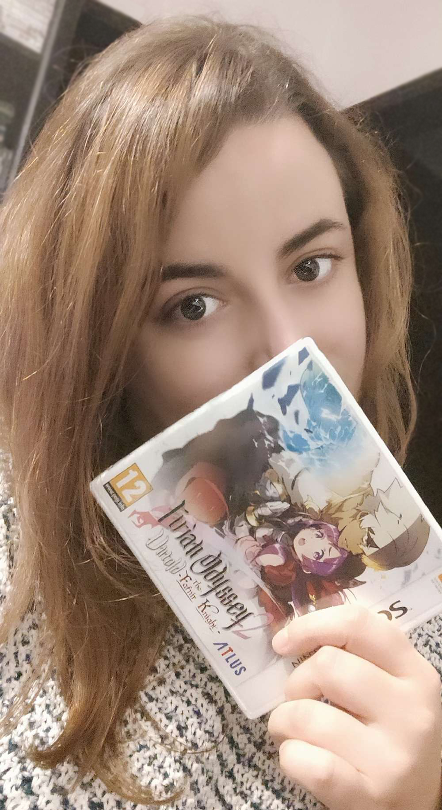

<section id="moreaboutme">
  <div class="moreaboutme-row">
    <div class="moreaboutme-photo">
      

      <p class="subtitle">
        A photo of me relaxing at home back when I was playing Etrian Odyssey
        Untold 2: The Fafnir Knight.
      </p>
    </div>

    <div class="moreaboutme-description">
      <h1 class>What else can I tell you about me...</h1>
      <p>
        Do you know that child who always liked to keep her nose in her books or
        clutching a videogame console? That was me! Nice to meet you!
      </p>
      <p>
        As a proud nerd/geek, I discovered the big, wide frontier of internet
        forums during my teenage years which resulted in my own flair for visual
        design and a keen interest in the "world of computers". I've always been
        a fantasy novels and videogame enthusiast, so I fit right in and even
        now, despite moving on with the years, I remain active in a few select
        communities.
      </p>
      <p>
        While both tech and science have always been my vocational callings, I
        did choose the former during my formal education – I went into more
        biology-related classes in high school and then ended up studying
        Occupational Therapy for one (big) reason: to help others.
      </p>
      <p>
        I ended up specialising in paediatric occupational therapy and assistive
        technologies to bring together everything I loved. Although the field is
        incredibly fulfilling and helping people gave great meaning to my life,
        I admit that the techie in me never really quieted.
      </p>
      <p>
        A fortuitous opportunity to enter an entrepreneurship programme and
        several business classes later gave birth to Inspiring Care. Sadly, this
        project of mine ended up as many such projects do: never taking off,
        except all the experience gained. But, in a sense, its influence never
        really died – it drove me to become a tech consultant and resulted in
        invaluable hands-on experience in the tech industry.
      </p>

      <p>
        To be honest with you, after a few years, I had realized that my
        aspirations and happiness had yet to be realised. I wasn't feeling
        accomplished and that amazing feeling of purpose had left my life
        somewhere along the way.
      </p>
      <p>During this time, I found UX by chance.</p>
      <p>
        UX Research was love at first sight. It was as if I had combined all my
        skills, all my interests and mental methods into one cohesive schema. I
        couldn't stop reading about it. It's the area that allows me to have the
        perfect intersection between my soft skills, my interests and my
        motivation to find out what's behind every bit of human behaviour so
        that I can help people in the best way.
      </p>
      <p>I had to take the leap. So here I am!</p>
      <p>
        My path is unusual, I know. My quest may seem downright bizarre to some.
        However, it has always been the pursuit of knowledge and experience that
        has allowed me to grow as a person and as a professional.
      </p>
      <p>
        Nevertheless, some things don't change. I'm still a nerd/geek, always
        around my videogames (RPGs are the best genre of video games. You can't
        convince me otherwise!), books, music, and friends. I'm still true to
        myself, be at work or at home. And I refuse to be anything other than
        the real thing.
      </p>
      <p>
        Thank you so much for stopping by (and for reading, I hope!). If there's
        anything else you'd like to know, send me a message!
      </p>
    </div>
  </div>
</section>
